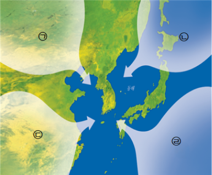

1번
다음은 우리나라의 계절별 날씨에 영향을 주는 공기 덩어리를 나타낸 것입니다.날씨에 영향을 주는 ㉠~㉣의 성질을 알맞게 설명한 친구로 짝지어진 것은?

- 정원 : 온도가 낮고 수증기를 적게 포함한 ㉠의 영향으로 날씨가 춥고 건조해.
- 원철 : 온도가 높고 수증기가 많은 ㉡의 영향으로 날씨가 덥고 습해.
- 한별 : 따뜻하고 건조한 ㉢의 영향으로 날씨가 따뜻하고 건조해.
- 윤서 : 온도가 낮고 수증기를 많이 포함한 ㉣의 영향을 받아 동해안에 서늘하고
습한 날이 자주 나타나.